呉に行ってきたった：1日目
公開日：
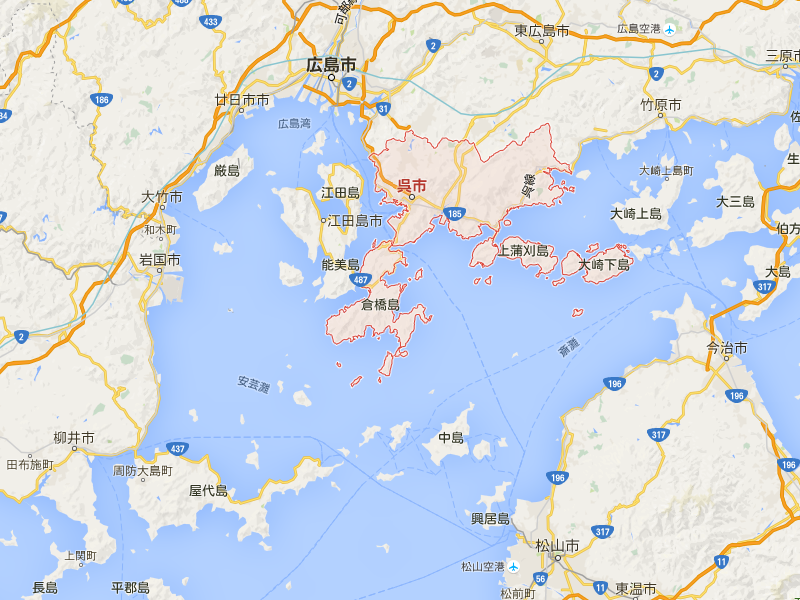
お盆は船で呉に行ってきました。愛媛・松山とは、海を挟んでお隣の街。スーパージェットで1時間、フェリーで2時間かからないぐらいの距離です。
呉は、人口22万の造船と海軍の街。かつては伊予水軍（村上水軍）の一派が根城にしていたそうで、なるほど、江田島・倉橋島に囲まれた潰れ気味の三角形の内海は、船を休ませておくには適している気がします。
それにしても、呉って面白い名前ですね。名前の由来はいくつかあるそうで……
呉市 - Wikipedia
- 呉一帯をつつむ連峰を「九嶺（きゅうれい）」と呼び、それがなまって「くれ」になった。なお、市章はこれにあやかり、カタカナの「レ」9つで星形をかたどったものである。
- 灰ヶ峰から伐採したくれ（榑、板材の意）が特産品として有名になったことに由来する。
- 中国三国時代の呉(孫権が建国）の子孫に由来し、戦乱などを逃れて呉から日本列島に亡命して呉周辺に住んでいた中国からの渡来人を「くれ人」と呼んでいたため。呉(ご）を訓読み(和訓)して「くれ」と呼んだ。
個人的には3つ目が好きです、平家の落ち武者伝説みたいで。そういえば、呉の国も船が得意な国でした（「南船北馬」って言いますよね！）。
ふぁーーー！ pic.twitter.com/MgjjkEUn1o
— だるやなぎ に天使が舞い降りた！ (@daruyanagi) 2015年8月13日
倉橋島と本土の間にある“音戸の瀬戸”と呼ばれる海峡をくぐると、そこはもう呉です。クレーンやタンカー、護衛艦がいっぱいいる。
なんかおるｗ pic.twitter.com/W1aGhrqwk7
— だるやなぎ に天使が舞い降りた！ (@daruyanagi) 2015年8月13日
呉港に着きフェリーターミナルを出ると、左手に大きな潜水艦が。こういうの、ちょっとワクワクしますよね！
当日は、大阪から新幹線（お盆の混雑で座れず、立っていたらしい。ざまぁｗ）でやってきた @jz5 と合流。まずは広島焼き広島風お好み焼きを楽しみました。
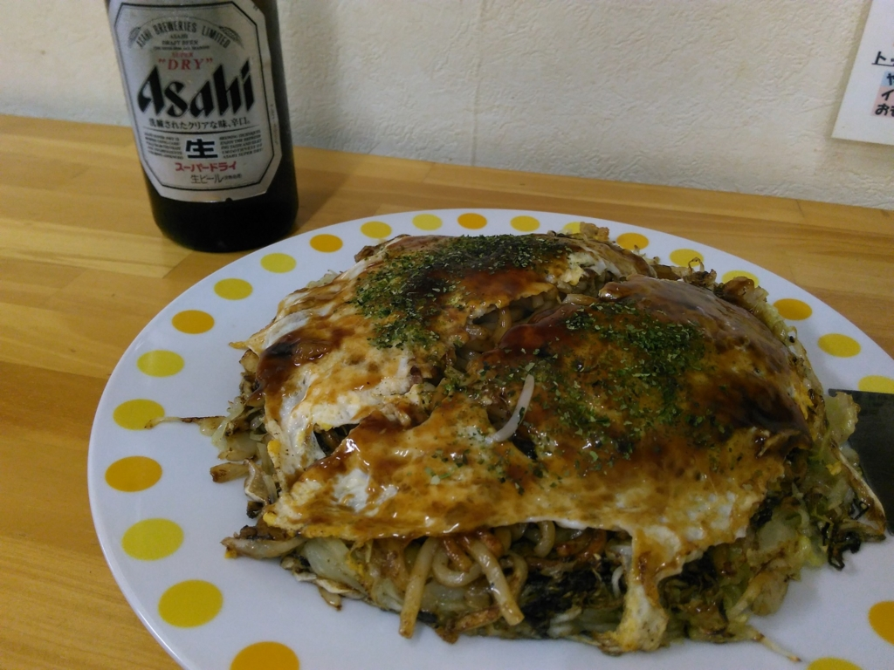
お店は冷房が効いておらず、鉄板の熱気もあってむちゃくちゃ暑かったですが（外を出たら涼しかったぐらい）、まずますのおいしさ。たまに広島焼き広島風お好み焼きもよいものですな。
I'm at お好み焼き たんぽぽ in 広島市, 広島県 https://t.co/PJq2QDcpVf
— だるやなぎ に天使が舞い降りた！ (@daruyanagi) 2015年8月13日
ちなみに、呉は川沿いのあたりに飲食店が多いようで、僕たちが言ったお好み焼き屋さんの方はオフィス街のようです。ご飯が食べたかったら、北東方面の中通り・れんが通りと言うあたりに行くとよいようですね。あと、川沿いには夜屋台が出ていて、美味しいラーメンが食べられます。
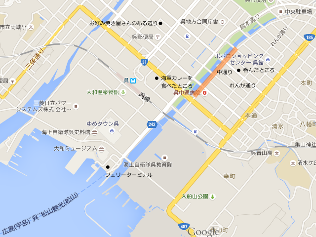
お腹いっぱいになったので、次は観光です。呉では
- 大和ミュージアム
- てつのくじら館
- 港めぐり（フェリーターミナル発）
は押さえておきたいところ（他にもいっぱいあるんだけど、電車と徒歩ではちょっとキビシイ）。その日はまず大和ミュージアムに行くことにしました。
大和ミュージアム
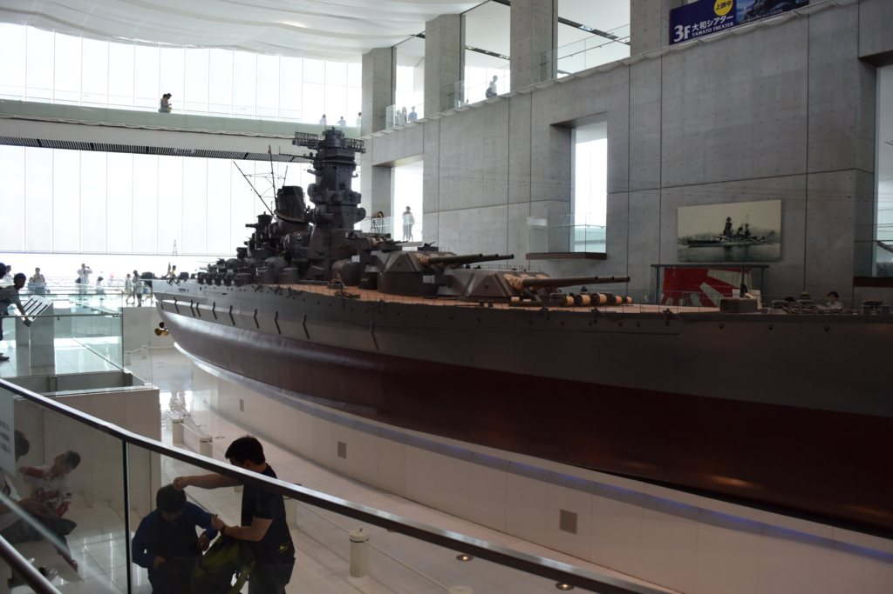
最大の目玉は、1/10 スケールの戦艦「大和」。呉で生まれた、世界最大の戦艦です。これ以上デカい戦艦は無用の長物、もとい、もろもろの周辺環境の変化から作られることはありませんでした。
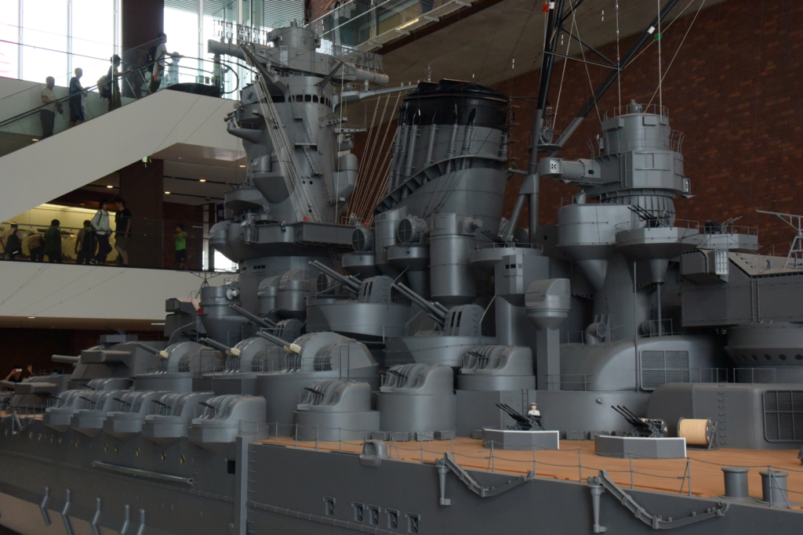
高角砲と機銃でハリネズミのようになってます。これでもほとんど敵機を撃ち落せなかったんだぜ……鉄くずにして飛行機作ってた方がマシだったな！
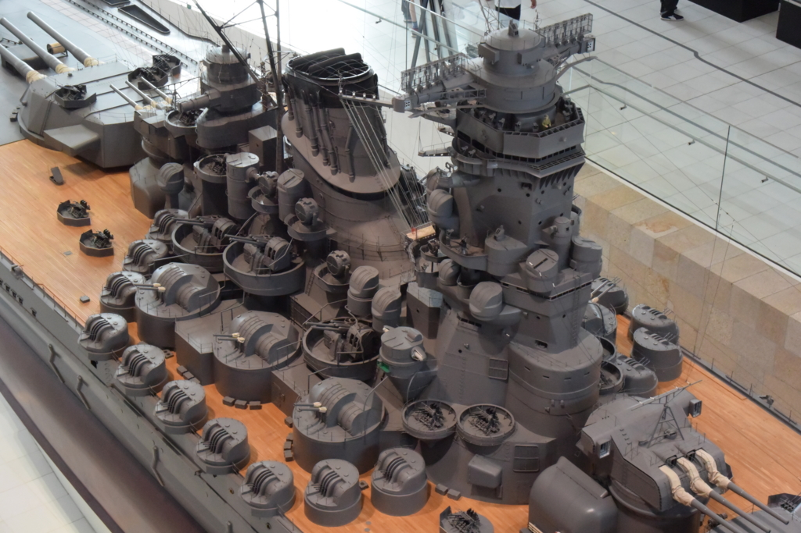
でも、デカい主砲はある意味ロマンだから、多少はね？ 15m測距儀をのっけた艦橋も、ドデカい1本煙突も、懐刀のような副砲もカッコイイ。こうした高い技術が戦後の復興にも役に立った――というのがこの博物館のテーマだけど、あまりな過大評価もどうかと思った。そもそも、大和をはじめ、旧海軍の艦船は機密の塊で、ロクに資料が残っていないことも少なくない。また、あの戦争では優秀な技術者の卵の多くが戦地に送り込まれ、無駄に戦死した。大和一隻なんかよりも、そっちの方がよっぽど日本にとっては惜しまれる犠牲だと思う。だいたい、電探の説明がないじゃないか、電探の！ 電探技術はすんげー遅れをとってましたすみません！ っていう展示もあってよいと思うよ。
とはいえ、やっぱりカッコいいのも事実。当時は全長が短くて胴が長い見慣れぬ艦形だったことから「タライブネ」なんて言われたりもしたそうだけど、このコンパクトさこそが大和の設計の偉大なところだった。機能美っすなぁ。
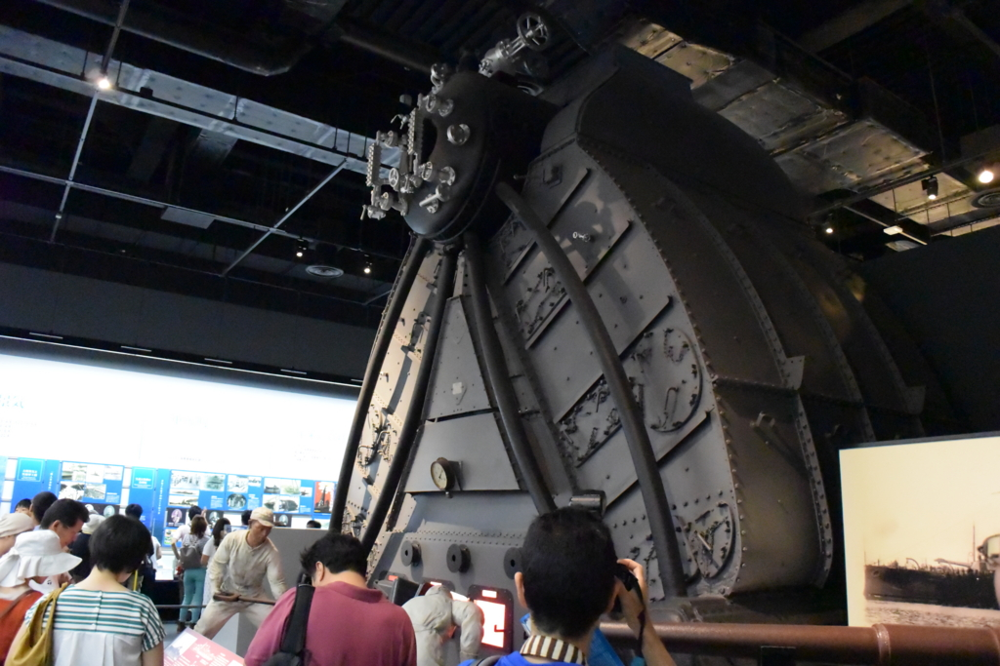
あと、そのほかの見どころといえば、戦艦「金剛」のヤーロー式ボイラー（缶）。真水を蒸気にしてタービンを回すための装置かな？ この缶は近代化改修の際に下ろされて、平成5年まで暖房用として使われていたのだそうな。さぞかしぬっくぬくやったやろうな。
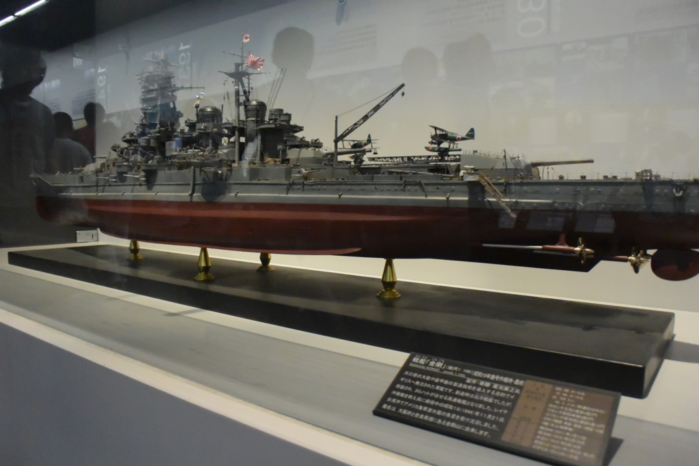
そういえば、近代化改装後の「金剛」の模型もありました。「英国生まれの帰国子女の金剛デース！！」 なお、太平洋戦争では「大和」よりもよっぽど活躍した模様。
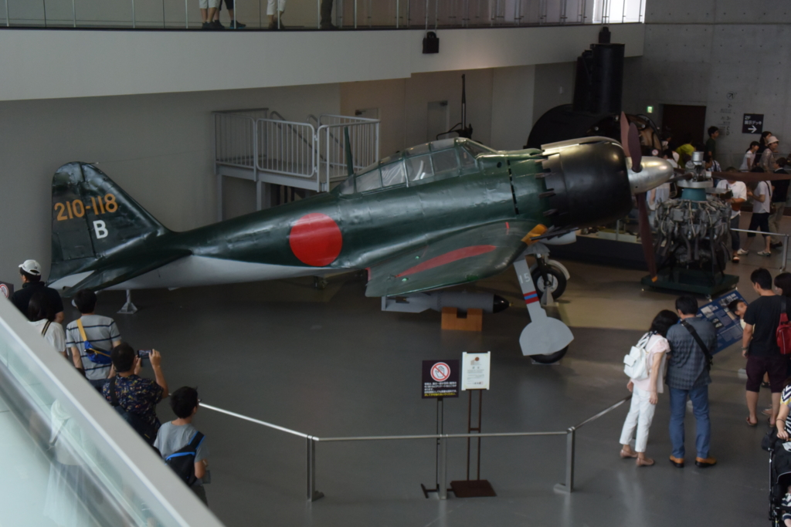
零式艦戦（ゼロ戦）六二型。ゼロ戦は大変優秀な艦上戦闘機（空母に載せて敵の戦闘機をやっつけるヤツ）で、太平洋戦争初期までは圧倒的だったけれど、エンジンの改善でアメリカに追いつけず、アホみたいな馬力と装甲・武装を備える米戦闘機に後れを取るようになっていった。いつも不思議に思うんだけど、今でもエンジンといえばロールスロイスとかだよね。エンジンの開発って難しいんだろうか。
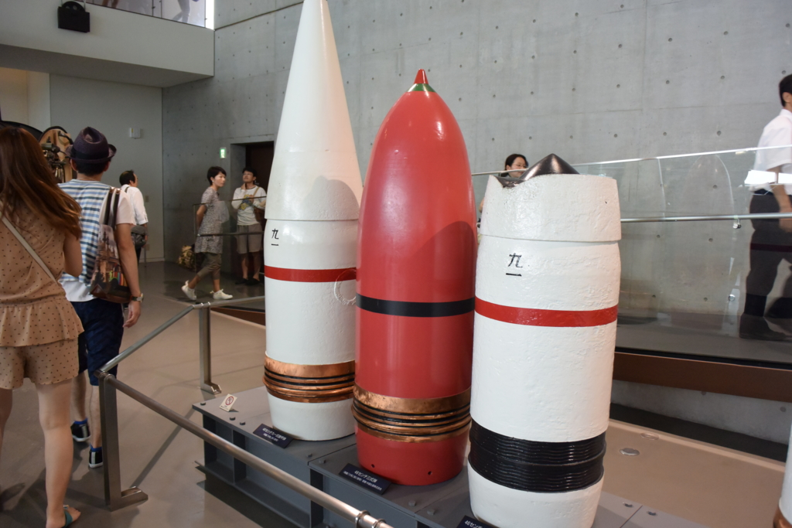
日本海軍の秘密兵器・九一式徹甲弾と三式弾。九一式徹甲弾は、弾を撃った後に水中を進み、敵戦艦の装甲の薄い喫水線下を食い破ろう、というコンセプトの弾。三式弾は特定の高度で爆発し、千個ほどの散弾を撒き散らす対空弾。敵の編隊の中で爆発すれば威力絶大（異説あり）だけど、それがなかなか難しかった。一方、アメリカは敵機に近づくと勝手に爆発する VT 信管を開発した模様。
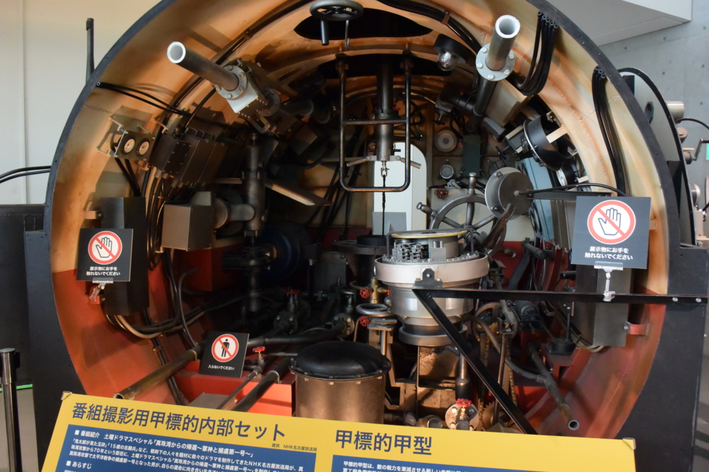
甲標的の模型。甲標的は二人乗りの特殊潜水艦（一応帰還することも考えていたので、特攻兵器ではない）で、前にグアムで見てきた。
他にもいろいろあったけど、たぶん自分で見た方が早い。大和ミュージアムはじっくり見ると三時間はかかるぐらい、見どころ満載だった。別に軍事マニアじゃなくてもおススメ、おススメ。今度は人の少ないときにバイクで行って、ビデオ資料もじっくり見たいものだ。
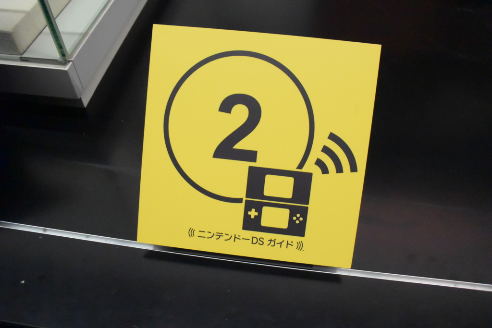
あと、艦内にはニンテンドー DS によるガイド機能があるので、持っているなら持って行くといいかも。自分はもってないので試せませんでした。
あとは、ラムネ飲んでのんびりしたり、港のそばにある碇（大和のかな？）で記念撮影したりしました。
大和の錨（申し訳なかった pic.twitter.com/hw7UrqUIc4
— だるやなぎ に天使が舞い降りた！ (@daruyanagi) 2015年8月13日
休憩スポットが測距儀のデザインになってたり、車止め（？）が徹甲弾になっているのがちょっと面白かった。
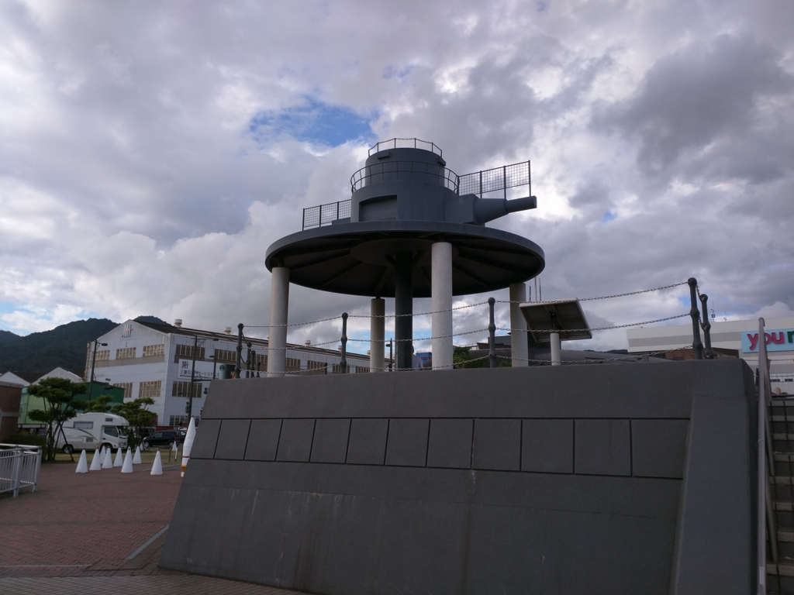
てつのくじら館
閉まってて涙目。明日出直す pic.twitter.com/unxVnBZaaS
— だるやなぎ に天使が舞い降りた！ (@daruyanagi) 2015年8月13日
／(＾o＾)＼
うおおお、閉まるの早えええ！ さっきあげた3つのポイントを一日で回るならば、
- 港めぐり（フェリーターミナル発）
- てつのくじら館
- 大和ミュージアム
の順番で回った方がよさそう。
夜のごはん
なうなう pic.twitter.com/aX6PogpBr4
— だるやなぎ に天使が舞い降りた！ (@daruyanagi) 2015年8月13日
夜は @Airish9 先生と合流。ホテルで教えてもらったお勧めの居酒屋さんでたらふく食べました。
なんか先生の親戚の方とばったり会って（呉って狭いな！）、あちこち連れていってもらったりしました。
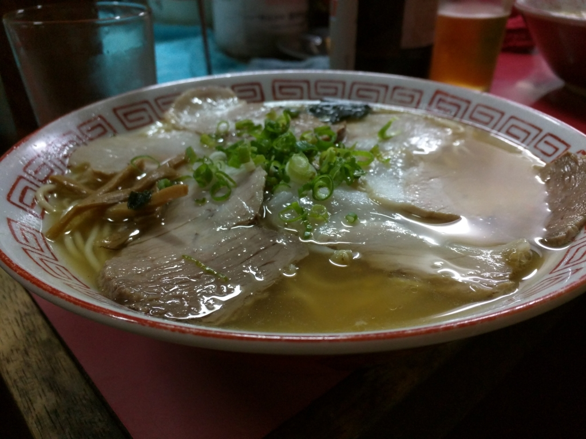
最後は屋台のラーメンで〆。焼き豚足も美味しゅうございました。でも、ぶっちゃけちょっと疲れた……